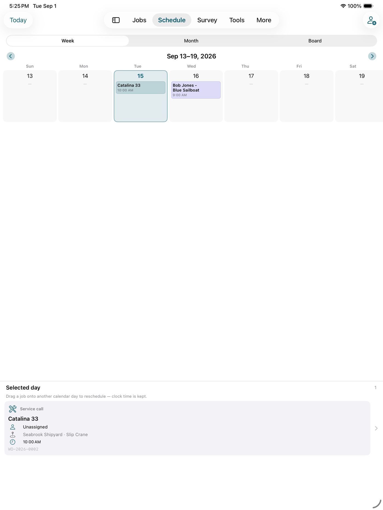
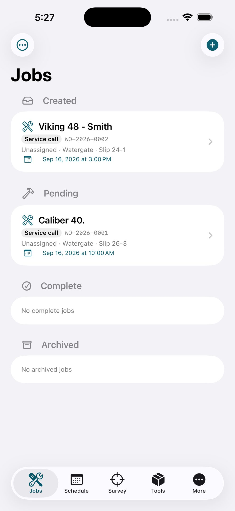
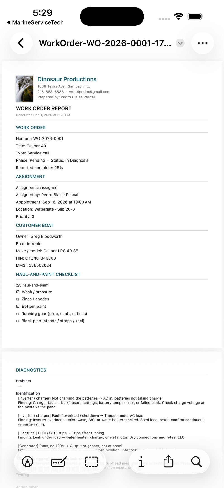

Firm letterhead, vessel, HIN, claim cover. The packet an adjuster can open.



Each transfer appends photos, log, costs, and findings. Later files do not wipe the trail.
Jobs, lines, hours — Excel plus a CSV a bookkeeper can import. Labor quantity is hours.
Who it’s for
Small marine service firms, mobile mechanics, marina techs, and yards that need appointments without an enterprise ERP. Managers run the board on iPad or Mac. Techs work the ticket on iPhone.
Managers
- Schedule board with who, what, and where — drag a job, keep the time of day
- Assign employees or contractors; share the work order by Messages or AirDrop
- Types: service, insurance, winterize, splash / launch, survey, estimate, emergency, warranty, handoff, deposit, cancel, referral
- Haul-and-paint checklist: wash, zincs, bottom paint, running gear, block plan
- Letterhead work-order PDF and a bookkeeper pack (Excel + hours/money PDF)
Field techs
- Import the file — that is the transfer. No extra login
- I’m here, photos, dictation, leaving. Documentation gates before Mark complete
- Diagnostic trees: propulsion, fuel, zincs, inverter/charger, cabin A/C, bow thruster, standing and running rigging, seacock, stuffing box
- Cost lines: parts, labor (hours), expenses, service
- Field return package appends to the same work order
Surveys
Condition & value, pre-purchase, insurance, storm, salvage. Standing rigging and running rigging as separate steps. Zincs, thruster, fuel. In-water or hauled. Linked to the job.
Owner handoff
Owners can document in IntrepidMarine and send a PDF
or a .msworkorder package so the problem statement is not re-typed wrong
at the counter. Same philosophy: proof over ceremony.
First 12 work orders free per device. Subscription unlocks unlimited creates — list price is in the store.